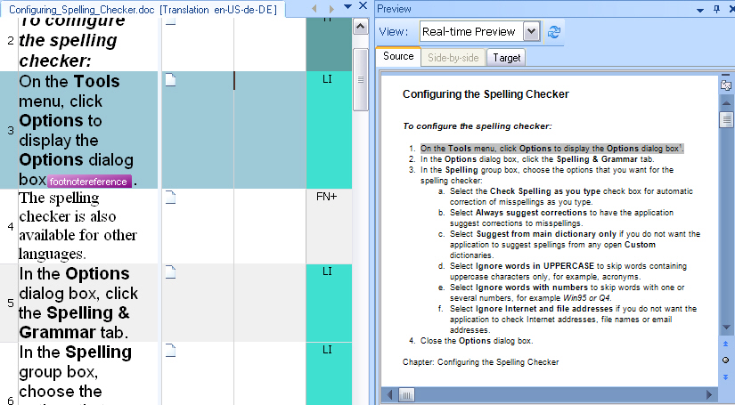

Previewing files
Trados Studio presents the source and target text in an 'abstracted' view, which gives users a general idea of the layout only through context information (see Using context information). However, for translators and editors it is often useful to view the 'real' document layout. This is why a file type plug-in should ideally be able to generate the source or target document (or both) in the native format, thus giving the users an idea of the actual document layout.
Trados Studio allows you to generate a document preview in an external application for virtually any supported document format. For example: When you process an Adobe FrameMaker file in Trados Studio and you choose to view the file in the corresponding external application, Adobe FrameMaker will be launched - provided, of course, that the FrameMaker application is installed on your machine. If this is not the case, then no preview in the external application is possible and a corresponding error message will be thrown.
In addition to generating a preview in a separate application you can also embed the preview in Trados Studio itself. In this case the document preview will be generated in an embedded window. Currently, Trados Studio supports this type of preview for the following formats: Microsoft Word, Microsoft PowerPoint, HTML, and XML.
The internal preview can be static or dynamic. Static means that the preview window shows the preview document, but it does not interact with the side-by-side editor. On the other hand, a dynamic preview interacts with the segments in the side-by-side editor. When you click, for example, a segment in the preview window, the corresponding segment in the editor will be highlighted (and vice versa). Internal preview windows usually rely on a display component, which does not require the actual application. For example, for Microsoft Word documents Trados Studio leverages a Word viewer component, which allows you to preview Word documents even if Microsoft Word is not installed on your machine. The HTML preview leverages a Web browser component.
A file type plug-in can be designed to generate previews for the source document, the target document or both (side-by-side.)
Example of an internal preview in for a Microsoft Word document in Trados Studio. The preview can be generated for the source or target language or for both at the same time (side-by-side). The file type plug-in for Microsoft Word files, however, does not generate a side-by-side preview, as this would take too much screen space, and this might also be a performance issue.

See Also
Implementing an External File Preview
Implementing the Preview Writer